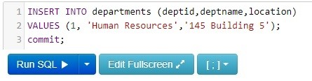

<link rel="stylesheet" href="home.css">
<!-- CSS only -->
<link rel="stylesheet" href="https://stackpath.bootstrapcdn.com/bootstrap/4.5.0/css/bootstrap.min.css"
  integrity="sha384-9aIt2nRpC12Uk9gS9baDl411NQApFmC26EwAOH8WgZl5MYYxFfc+NcPb1dKGj7Sk" crossorigin="anonymous">

<!-- JS, Popper.js, and jQuery -->
<script src="https://code.jquery.com/jquery-3.5.1.slim.min.js"
  integrity="sha384-DfXdz2htPH0lsSSs5nCTpuj/zy4C+OGpamoFVy38MVBnE+IbbVYUew+OrCXaRkfj" crossorigin="anonymous"></script>
<script src="https://cdn.jsdelivr.net/npm/popper.js@1.16.0/dist/umd/popper.min.js"
  integrity="sha384-Q6E9RHvbIyZFJoft+2mJbHaEWldlvI9IOYy5n3zV9zzTtmI3UksdQRVvoxMfooAo" crossorigin="anonymous"></script>
<script src="https://stackpath.bootstrapcdn.com/bootstrap/4.5.0/js/bootstrap.min.js"
  integrity="sha384-OgVRvuATP1z7JjHLkuOU7Xw704+h835Lr+6QL9UvYjZE3Ipu6Tp75j7Bh/kR0JKI" crossorigin="anonymous"></script>
<header>
  <div class="header-banner">
    <h1>Suyash 17BLC1041</h1>
  </div>
  <div class="clear"></div>
  <nav>
    <div class="site-title">17BLC1041</div>
    <ul>
      <li><a href="index.html">HOME</a></li>
      <li><a href="dml.html">DML</a></li>
      <li><a href="ddl.html">DDL</a></li>
      <li><a href="exit.html">Assignment Details</a></li>
      <ul>
  </nav>
</header>

<section class="content">
  <article>
    <p>
      Examples of DML commands include Select,Insert,Update and Delete
      commands.
    </p>
    <h1>INSERT</h1>
    <p>
      A basic INSERT statement can take on two forms.
      <li>The first is to specify columns names and the values to be inserted.
        When specifying columns, you should be specific in the data you enter but the order does not matter.</li>
      <li>If you are going to insert data into all columns, then you can use the second form and just specify the
        values. The order of the values must match the table column order.
        If you are following along in SQL Fiddle, you will need to do some additional inserts into the EMPLOYEES table
        to have data in it as well.
      </li>
    </p>
    Method 1:
    
    <p>
      Method 2:
      
    </p>
    <br></br>
    <h1>UPDATE</h1>
    <p>
      Update statements allow you to change the data in specific columns for rows stored in a table. You can choose a
      specific row to update by including theWHERE clause and utilize a unique set of values. In the employees table the
      EMPLOYEEID is unique. If Fredrick decided to change his last name then we can update the LASTNAME column based on
      the EMPLOYEEID of 3.
    </p>
    
    <p>
      
    </p>
    You can also update multiple rows at the same time, based on the <strong>WHERE</strong> clause.
    </p>
    
    <p>
      
    </p>

    <p>
    <h1>DELETE</h1>
    <p>
      If there is data in a table that you no longer need, then you execute a DELETE statement to remove the data.
      Similar to the UPDATE statement, you need to use the WHERE clause to be specific on the data being deleted.
    </p>
    
    <p>
      
    </p>
    If you don not use the <strong>WHERE</strong> clause you will delete all the rows within the table.
    </p>
    
    <p>
      
    </p>

    <p>
      SQL Categorizes its commands on the basis of functionalities performed by them. There are five types of SQL
      Commands which can be classified as:
    <ol>
      <li>DDL(Data Definition Language).</li>
      <li>DML(Data Manipulation Language).</li>
      <li>DQL(Data Query Language).</li>
      <li>DCL(Data Control Language).</li>
      <li>TCL(Transaction Control Language).</li>
    </ol>
    </p>
    <article>Assignment submitted by</article>
    <footer>
      <article>Assignment submitted by</article>
      <li>
        Suyash Chamarthy  17BLC1041
      </li>
      <li>G1 Slot         Database management System</li>
    <footer>
  </article>

  <aside>

    </img>
    </img>
    <p> </p>
    learn about:

    <a href="index.html#ddl"><Strong>
        <li>DDL</li>
      </Strong> </a>
    <a href="index.html#dml"><Strong>
        <li>DML</li>
      </Strong></a>
    <a href="index.html#dql"><Strong>
        <li>DQL</li>
      </Strong></a>
    <a href="index.html#dcl"><Strong>
        <li>DCL</li>
      </Strong></a>
    <a href="index.html#tcl"><Strong>
        <li>TCL</li>
      </Strong></a>
  </aside>
  <button onclick="topFunction()" id="myBtn" title="Go to top">UP</button>
</section>
<script src="home.js"></script>
